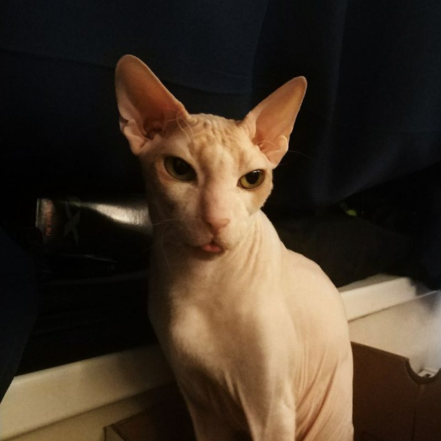

Породы
В настоящее время в мире насчитывается около 600 млн домашних кошек, выведено около 200 пород, от длинношёрстных (персидская кошка) до лишённых шерсти (сфинксы), признанных и зарегистрированных различными фелинологическими организациями.
Группы пород
- персидские длинношёрстные
- остальные длинношёрстные
- британские короткошёрстные
- американские короткошёрстные
- ориентальные короткошёрстные
Сфинкс Донской
«Котёнок до старости» — таков характер донского сфинкса. Это чрезвычайно игривые, дружелюбные и
любопытные кошки. Отсутствие агрессии, мягкий и тактичный нрав в сочетании с энергичностью сделают
дончанина идеальным питомцем для семьи с детьми. Это очень тактильные и общительные кошки,
сообразительные и легко обучаемые.

Необходимые вещи
- Лоток
- Миска для воды
- Миска для еды
- Игрушки
- Когтеческа